library(ggplot2)Data management Figure for ITSTGCN
STGCN
Import
library(dplyr)
Attaching package: ‘dplyr’
The following objects are masked from ‘package:stats’:
filter, lag
The following objects are masked from ‘package:base’:
intersect, setdiff, setequal, union
df <- read.csv("./df_fig.csv")head(df)| X | dataset | method | mrate | mtype | lags | nof_filters | inter_method | epoch | mse | calculation_time | model | |
|---|---|---|---|---|---|---|---|---|---|---|---|---|
| <int> | <chr> | <chr> | <dbl> | <chr> | <int> | <dbl> | <chr> | <dbl> | <dbl> | <dbl> | <chr> | |
| 1 | 0 | fivenodes | STGCN | 0.0 | 2 | 12 | 50 | 0.7293743 | 80.98522 | GConvGRU | ||
| 2 | 1 | fivenodes | STGCN | 0.0 | 2 | 12 | 50 | 0.7290817 | 80.89179 | GConvGRU | ||
| 3 | 2 | fivenodes | STGCN | 0.7 | rand | 2 | 12 | linear | 50 | 1.8922616 | 81.97655 | GConvGRU |
| 4 | 3 | fivenodes | STGCN | 0.7 | rand | 2 | 12 | nearest | 50 | 2.2112885 | 87.80387 | GConvGRU |
| 5 | 4 | fivenodes | STGCN | 0.8 | rand | 2 | 12 | linear | 50 | 2.0728178 | 103.64874 | GConvGRU |
| 6 | 5 | fivenodes | STGCN | 0.8 | rand | 2 | 12 | nearest | 50 | 2.5664744 | 98.34010 | GConvGRU |
A data.frame: 6 × 12
fivenode
fivenodes <- data.frame(rbind(
df %>% filter(dataset=='fivenodes' & mtype=='rand' & inter_method == 'linear' & nof_filters==12 & lags==2 & epoch==50 & model=='GConvGRU' &
( mrate == 0.3 | mrate == 0.5 |mrate == 0.6 | mrate == 0.7 | mrate == 0.8)),
df %>% filter(dataset=='fivenodes' & mtype=='rand' & inter_method == 'linear' & nof_filters==12 & lags==2 & epoch==50 & model=='GConvLSTM' &
( mrate == 0.3 | mrate == 0.5 |mrate == 0.6 | mrate == 0.7 | mrate == 0.8)),
df %>% filter(dataset=='fivenodes' & mtype=='rand' & inter_method == 'linear' & nof_filters==4 & lags==2 & epoch==50 & model=='GCLSTM' &
( mrate == 0.3 | mrate == 0.5 |mrate == 0.6 | mrate == 0.7 | mrate == 0.8)),
df %>% filter(dataset=='fivenodes' & mtype=='rand' & inter_method == 'linear' & nof_filters==4 & lags==2 & epoch==50 & model=='LRGCN' &
( mrate == 0.3 | mrate == 0.5 |mrate == 0.6 | mrate == 0.7 | mrate == 0.8)),
df %>% filter(dataset=='fivenodes' & mtype=='rand' & inter_method == 'linear' & nof_filters==12 & lags==2 & epoch==50 & model=='DyGrEncoder' &
( mrate == 0.3 | mrate == 0.5 |mrate == 0.6 | mrate == 0.7 | mrate == 0.8)),
df %>% filter(dataset=='fivenodes' & mtype=='rand' & inter_method == 'linear' & lags==2 & epoch==50 & model=='EvolveGCNH' &
( mrate == 0.3 | mrate == 0.5 |mrate == 0.6 | mrate == 0.7 | mrate == 0.8)),
df %>% filter(dataset=='fivenodes' & mtype=='rand' & inter_method == 'linear' & lags==2 & epoch==50 & model=='EvolveGCNO' &
( mrate == 0.3 | mrate == 0.5 |mrate == 0.6 | mrate == 0.7 | mrate == 0.8)),
df %>% filter(dataset=='fivenodes' & mtype=='rand' & inter_method == 'linear' & nof_filters==12 & lags==2 & epoch==50 & model=='TGCN' &
( mrate == 0.3 | mrate == 0.5 |mrate == 0.6 | mrate == 0.7 | mrate == 0.8)),
df %>% filter(dataset=='fivenodes' & mtype=='rand' & inter_method == 'linear' & nof_filters==2 & lags==2 & epoch==50 & model=='DCRNN' &
( mrate == 0.3 | mrate == 0.5 |mrate == 0.6 | mrate == 0.7 | mrate == 0.8))))
fivenodes$model <- factor(fivenodes$model, levels = c("GConvGRU","GConvLSTM","GCLSTM","LRGCN","DyGrEncoder","EvolveGCNH","EvolveGCNO","TGCN","DCRNN"))
fivenodes$method <- factor(fivenodes$method, levels = c('STGCN','IT-STGCN'))후보 1
ggplot(fivenodes, aes(x=mrate,y= mse,group=mrate)) + facet_wrap(model~method) +
geom_boxplot(fill='grey',color='black',width=0.7,outlier.color = 'darkblue',outlier.shape = 2) + theme_classic()
# ggsave("random_list_fivenodes.png")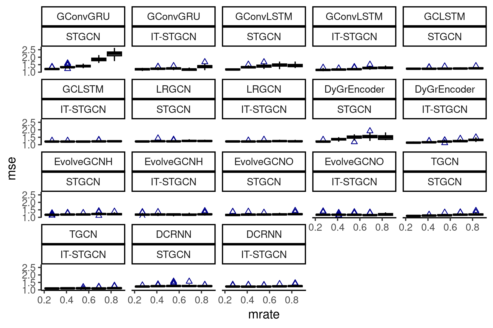
후보 2
ggplot(fivenodes, aes(x=mrate,y= log10(mse),group=mrate)) + facet_wrap(model~method,,ncol=4) +
geom_boxplot(fill='grey',color='black',width=0.7,outlier.color = 'darkblue',outlier.shape = 2) +
theme_classic()
# ggsave("random_list_fivenodes.png")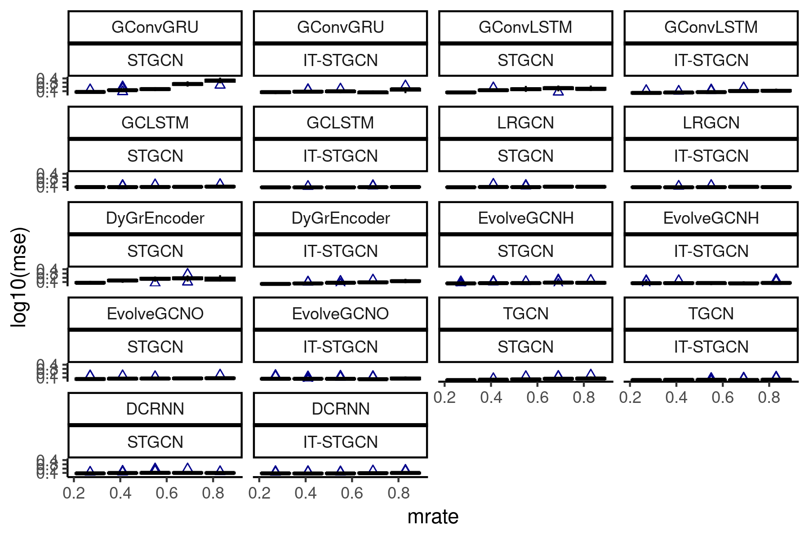
후보 3
ggplot(fivenodes, aes(x = mrate, y = log10(mse), group = mrate)) +
geom_boxplot(fill = 'grey', color = 'black', width = 0.7, outlier.color = 'darkblue', outlier.shape = 2) +
theme(strip.background = element_blank(), strip.placement = "outside", panel.grid = element_blank()) +
facet_wrap(model ~ method, ncol = 4, scales = "free_y",) +
xlab("Missing Rate") +
ylab("MSE(log scale)") +
scale_x_continuous(labels=c('','','','',''))
# ggsave("random_list_fivenodes.pdf")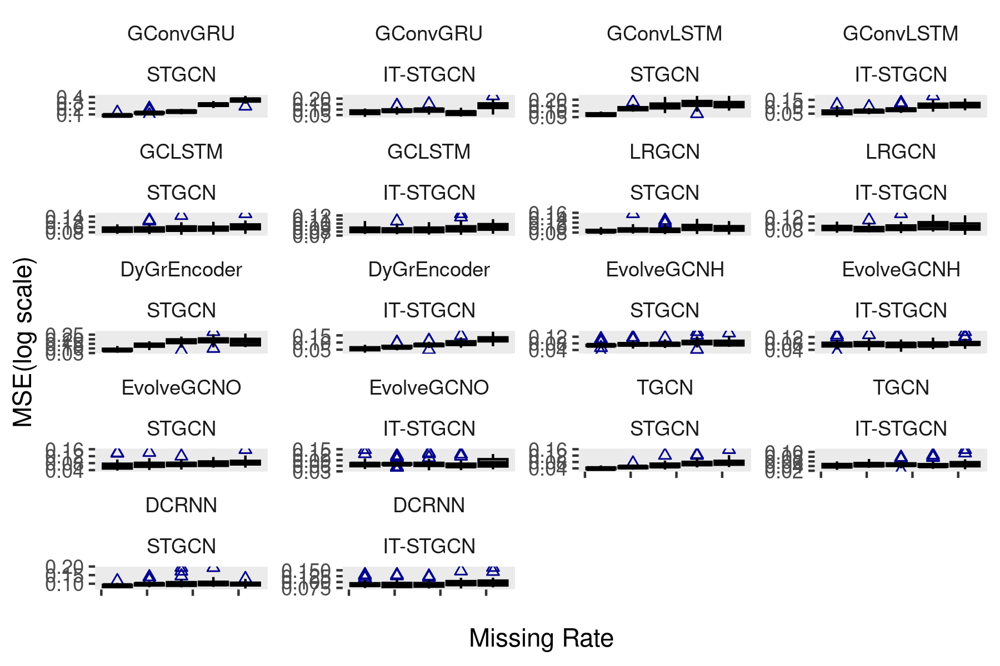
후보 4
p1 = ggplot(fivenodes, aes(x = mrate, y = log10(mse), group = interaction(mrate, method))) +
geom_boxplot(aes(fill = method), color = 'black', width = 0.7, outlier.color = 'black', outlier.shape = 2) +
scale_fill_manual(values = c("steelblue", "pink"), labels=c('Classic', 'Proposed')) +
theme(strip.background = element_blank(), strip.placement = "outside", panel.grid = element_blank(),
legend.position = "") +
labs(x = " ", y = "", fill = "") +
scale_x_continuous(labels = c('', '', '', '', '')) +
facet_wrap(~model, ncol = 3, scales = "free_y")
# ggsave("random_list_fivenodes.pdf")ggplot(fivenodes, aes(x = mrate, y = log10(mse), group = interaction(mrate, method))) +
geom_boxplot(aes(fill = method), color = 'black', width = 0.7, outlier.color = 'black', outlier.shape = 2) +
scale_fill_manual(values = c("steelblue", "pink"), labels=c('Classic', 'Proposed')) +
theme(strip.background = element_blank(), strip.placement = "outside", panel.grid = element_blank(),
legend.position = 'bottom') +
labs(x = "Missing Rate", y = "MSE(log scale)", fill = "") +
scale_x_continuous(labels = c('', '', '', '', '')) +
facet_wrap(~model, ncol = 3, scales = "free_y")
# ggsave("random_list_fivenodes.pdf")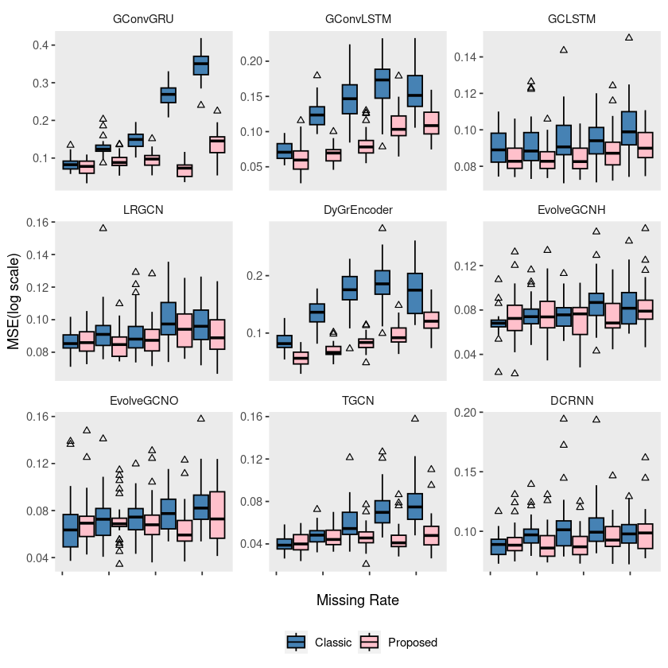
ChickenpoxDatasetLoader(lags=4)
chickenpox <- rbind(
df %>% filter(dataset=='chickenpox' & mtype=='rand' & inter_method == 'linear' & nof_filters==16 & lags==4 & epoch==50 & model=='GConvGRU' &
( mrate == 0.3 | mrate == 0.5 |mrate == 0.6 | mrate == 0.8)),
df %>% filter(dataset=='chickenpox' & mtype=='rand' & inter_method == 'linear' & nof_filters==32 & lags==4 & epoch==50 & model=='GConvLSTM' &
( mrate == 0.3 | mrate == 0.5 |mrate == 0.6 | mrate == 0.8)),
df %>% filter(dataset=='chickenpox' & mtype=='rand' & inter_method == 'linear' & nof_filters==16 & lags==4 & epoch==50 & model=='GCLSTM' &
( mrate == 0.3 | mrate == 0.5 |mrate == 0.6 | mrate == 0.8)),
df %>% filter(dataset=='chickenpox' & mtype=='rand' & inter_method == 'linear' & nof_filters==8 & lags==4 & epoch==50 & model=='LRGCN' &
( mrate == 0.3 | mrate == 0.5 |mrate == 0.6 | mrate == 0.8)),
df %>% filter(dataset=='chickenpox' & mtype=='rand' & inter_method == 'linear' & nof_filters==12 & lags==4 & epoch==50 & model=='DyGrEncoder' &
( mrate == 0.3 | mrate == 0.5 |mrate == 0.6 | mrate == 0.8)),
df %>% filter(dataset=='chickenpox' & mtype=='rand' & inter_method == 'linear' & lags==4 & epoch==50 & model=='EvolveGCNH' &
( mrate == 0.3 | mrate == 0.5 |mrate == 0.6 | mrate == 0.8)),
df %>% filter(dataset=='chickenpox' & mtype=='rand' & inter_method == 'linear' & lags==4 & epoch==50 & model=='EvolveGCNO' &
( mrate == 0.3 | mrate == 0.5 |mrate == 0.6 | mrate == 0.8)),
df %>%filter(dataset=='chickenpox' & mtype=='rand' & inter_method == 'linear' & nof_filters==12 & lags==4 & epoch==50 & model=='TGCN' &
( mrate == 0.3 | mrate == 0.5 |mrate == 0.6 | mrate == 0.8)),
df %>%filter(dataset=='chickenpox' & mtype=='rand' & inter_method == 'linear' & nof_filters==16 & lags==4 & epoch==50 & model=='DCRNN' &
( mrate == 0.3 | mrate == 0.5 |mrate == 0.6 | mrate == 0.8)))
chickenpox$model <- factor(chickenpox$model, levels = c("GConvGRU","GConvLSTM","GCLSTM","LRGCN","DyGrEncoder","EvolveGCNH","EvolveGCNO","TGCN","DCRNN"))
chickenpox$method <- factor(chickenpox$method, levels = c('STGCN','IT-STGCN'))ggplot(chickenpox, aes(x=mrate,y= mse,group=mrate)) + facet_wrap(model~method,ncol=4) +
geom_boxplot(fill='grey',color='black',width=0.7,outlier.color = 'darkblue',outlier.shape = 2) + theme_classic()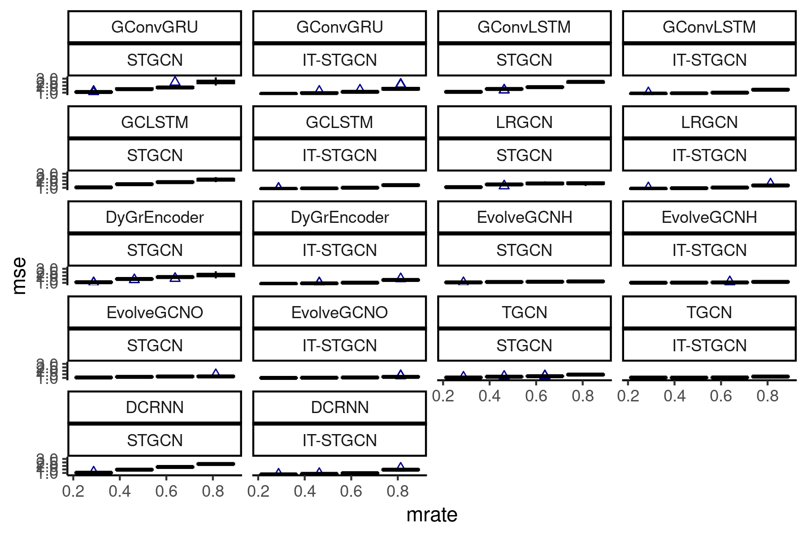
ggplot(chickenpox, aes(x=mrate,y= log10(mse),group=mrate)) + facet_wrap(model~method,ncol=4) +
geom_boxplot(fill='grey',color='black',width=0.7,outlier.color = 'darkblue',outlier.shape = 2) + theme_classic()
ggplot(chickenpox, aes(x=mrate,y= log10(mse),group=mrate)) +
geom_boxplot(fill='grey',color='black',width=0.7,outlier.color = 'darkblue',outlier.shape = 2) +
theme(strip.background = element_blank(), strip.placement = "outside", panel.grid = element_blank()) +
facet_wrap(model ~ method, ncol = 4, scales = "free_y") +
xlab("Missing Rate") +
ylab("MSE(log scale)") +
scale_x_continuous(labels=c('','','','',''))
# ggsave("random_list_chickenpox.pdf")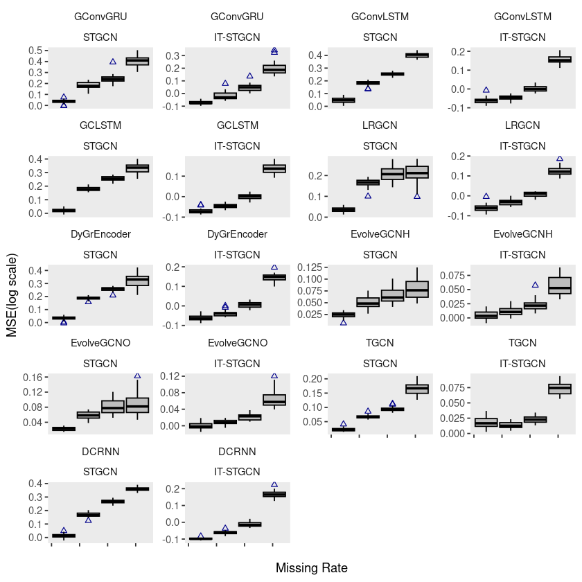
p2= ggplot(chickenpox, aes(x = mrate, y = log10(mse), group = interaction(mrate, method))) +
geom_boxplot(aes(fill = method), color = 'black', width = 0.7, outlier.color = 'black', outlier.shape = 2) +
scale_fill_manual(values = c("steelblue", "pink"), labels=c('Classic', 'Proposed')) +
theme(strip.background = element_blank(), strip.placement = "outside", panel.grid = element_blank(),
legend.position = '') +
labs(x = " ", y = "", fill = "") +
scale_x_continuous(labels = c('', '', '', '', '')) +
facet_wrap(~model, ncol = 3, scales = "free_y")
# ggsave("random_list_chickenpox.pdf")ggplot(chickenpox, aes(x = mrate, y = log10(mse), group = interaction(mrate, method))) +
geom_boxplot(aes(fill = method), color = 'black', width = 0.7, outlier.color = 'black', outlier.shape = 2) +
scale_fill_manual(values = c("steelblue", "pink"), labels=c('Classic', 'Proposed')) +
theme(strip.background = element_blank(), strip.placement = "outside", panel.grid = element_blank(),
legend.position = 'bottom') +
labs(x = "Missing Rate", y = "MSE(log scale)", fill = "") +
scale_x_continuous(labels = c('', '', '', '', '')) +
facet_wrap(~model, ncol = 3, scales = "free_y")
# ggsave("random_list_chickenpox.pdf")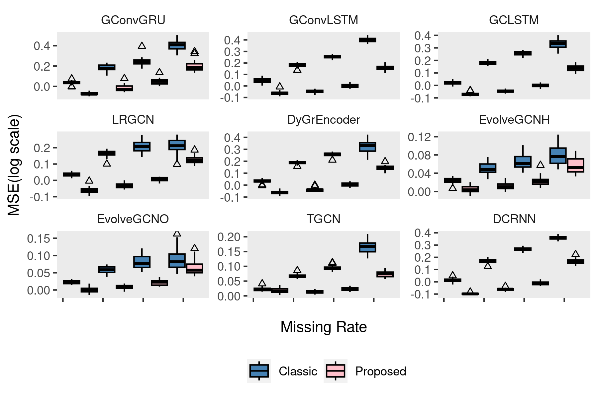
PedalMeDatasetLoader (lags=4)
pedalme <- rbind(
df %>% filter(dataset=='pedalme' & mtype=='rand' & inter_method == 'linear' & nof_filters==12 & lags==4 & epoch==50 & model=='GConvGRU' &
( mrate == 0.3 | mrate == 0.5 |mrate == 0.6 | mrate == 0.8)),
df %>% filter(dataset=='pedalme' & mtype=='rand' & inter_method == 'linear' & nof_filters==2 & lags==4 & epoch==50 & model=='GConvLSTM' &
( mrate == 0.3 | mrate == 0.5 |mrate == 0.6 | mrate == 0.8)),
df %>% filter(dataset=='pedalme' & mtype=='rand' & inter_method == 'linear' & nof_filters==4 & lags==4 & epoch==50 & model=='GCLSTM' &
( mrate == 0.3 | mrate == 0.5 |mrate == 0.6 | mrate == 0.8)),
df %>% filter(dataset=='pedalme' & mtype=='rand' & inter_method == 'linear' & nof_filters==8 & lags==4 & epoch==50 & model=='LRGCN' &
( mrate == 0.3 | mrate == 0.5 |mrate == 0.6 | mrate == 0.8)),
df %>% filter(dataset=='pedalme' & mtype=='rand' & inter_method == 'linear' & nof_filters==12 & lags==4 & epoch==50 & model=='DyGrEncoder' &
( mrate == 0.3 | mrate == 0.5 |mrate == 0.6 | mrate == 0.8)),
df %>% filter(dataset=='pedalme' & mtype=='rand' & inter_method == 'linear' & lags==4 & epoch==50 & model=='EvolveGCNH' &
( mrate == 0.3 | mrate == 0.5 |mrate == 0.6 | mrate == 0.8)),
df %>% filter(dataset=='pedalme' & mtype=='rand' & inter_method == 'linear' & lags==4 & epoch==50 & model=='EvolveGCNO' &
( mrate == 0.3 | mrate == 0.5 |mrate == 0.6 | mrate == 0.8)),
df %>% filter(dataset=='pedalme' & mtype=='rand' & inter_method == 'linear' & nof_filters==12 & lags==4 & epoch==50 & model=='TGCN' &
( mrate == 0.3 | mrate == 0.5 |mrate == 0.6 | mrate == 0.8)),
df %>% filter(dataset=='pedalme' & mtype=='rand' & inter_method == 'linear' & nof_filters==8 & lags==4 & epoch==50 & model=='DCRNN' &
( mrate == 0.3 | mrate == 0.5 |mrate == 0.6 | mrate == 0.8)))
pedalme$model <- factor(pedalme$model, levels = c("GConvGRU","GConvLSTM","GCLSTM","LRGCN","DyGrEncoder","EvolveGCNH","EvolveGCNO","TGCN","DCRNN"))
pedalme$method <- factor(pedalme$method, levels = c('STGCN','IT-STGCN'))ggplot(pedalme, aes(x=mrate,y= mse,group=mrate)) + facet_wrap(model~method,ncol=4) +
geom_boxplot(fill='grey',color='black',width=0.7,outlier.color = 'darkblue',outlier.shape = 2) + theme_classic()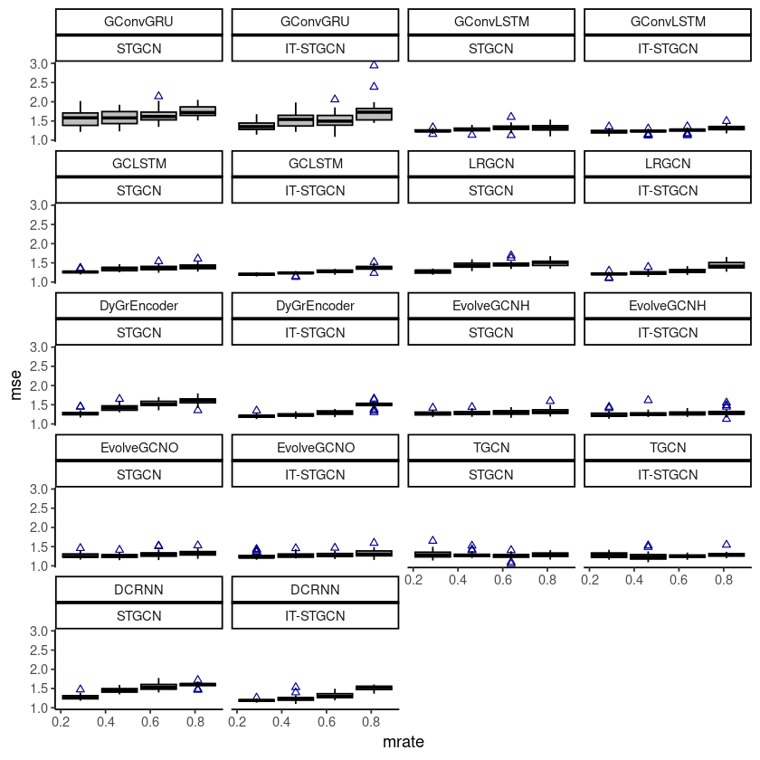
ggplot(pedalme, aes(x=mrate,y= log10(mse),group=mrate)) + facet_wrap(model~method,ncol=4) +
geom_boxplot(fill='grey',color='black',width=0.7,outlier.color = 'darkblue',outlier.shape = 2) + theme_classic()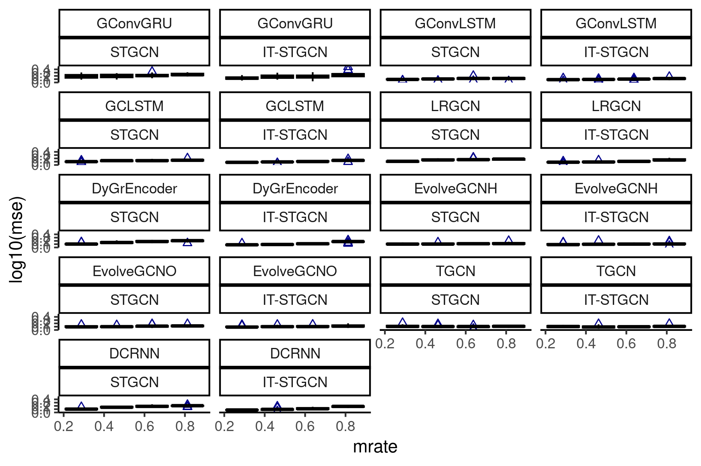
ggplot(pedalme, aes(x=mrate,y= log10(mse),group=mrate)) +
geom_boxplot(fill='grey',color='black',width=0.7,outlier.color = 'darkblue',outlier.shape = 2) +
theme(strip.background = element_blank(), strip.placement = "outside", panel.grid = element_blank()) +
facet_wrap(model ~ method, ncol = 4, scales = "free_y") +
xlab("Missing Rate") +
ylab("MSE(log scale)") +
scale_x_continuous(labels=c('','','','',''))
# ggsave("random_list_pedalme.pdf")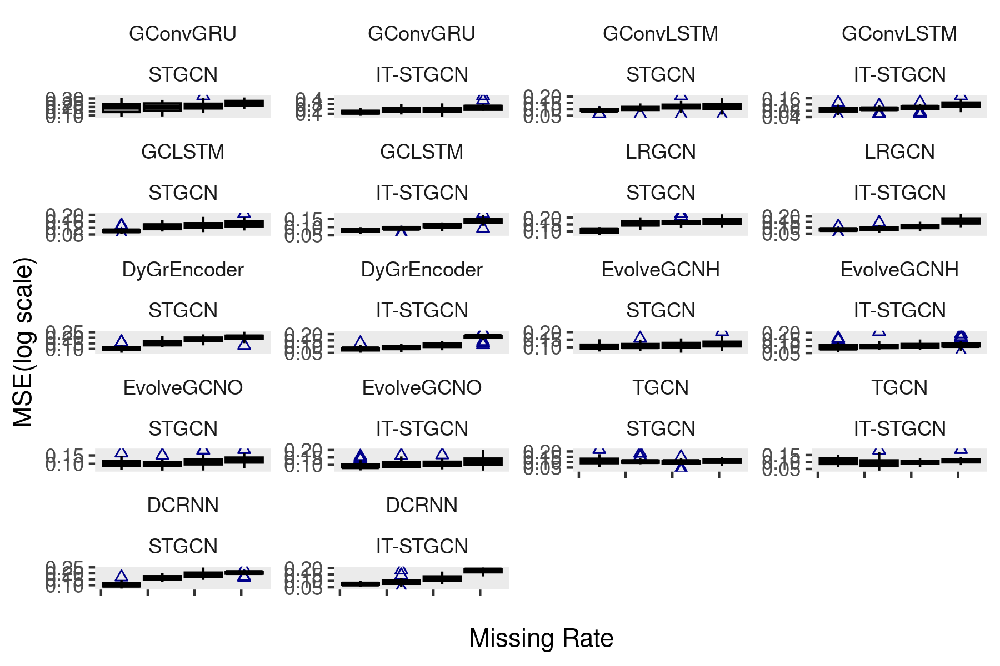
p3 = ggplot(pedalme, aes(x = mrate, y = log10(mse), group = interaction(mrate, method))) +
geom_boxplot(aes(fill = method), color = 'black', width = 0.7, outlier.color = 'black', outlier.shape = 2) +
scale_fill_manual(values = c("steelblue", "pink"), labels=c('Classic', 'Proposed')) +
theme(strip.background = element_blank(), strip.placement = "outside", panel.grid = element_blank(),
legend.position = '') +
labs(x = "", y = "", fill = "") +
scale_x_continuous(labels = c('', '', '', '', '')) +
facet_wrap(~model, ncol = 3, scales = "free_y")
# ggsave("random_list_pedalme.pdf")ggplot(pedalme, aes(x = mrate, y = log10(mse), group = interaction(mrate, method))) +
geom_boxplot(aes(fill = method), color = 'black', width = 0.7, outlier.color = 'black', outlier.shape = 2) +
scale_fill_manual(values = c("steelblue", "pink"), labels=c('Classic', 'Proposed')) +
theme(strip.background = element_blank(), strip.placement = "outside", panel.grid = element_blank(),
legend.position = 'bottom') +
labs(x = "Missing Rate", y = "MSE(log scale)", fill = "") +
scale_x_continuous(labels = c('', '', '', '', '')) +
facet_wrap(~model, ncol = 3, scales = "free_y")
# ggsave("random_list_pedalme.pdf")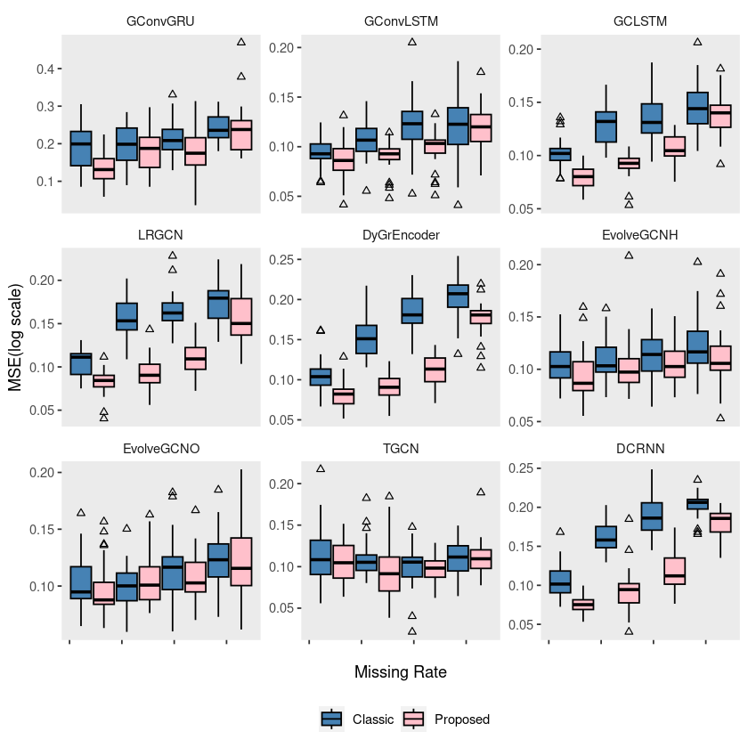
WikiMathsDatasetLoader (lags=8)
wikimath <- rbind(
df %>% filter(dataset=='wikimath' & mtype=='rand' & inter_method == 'linear' & nof_filters==12 & lags==8 & epoch==50 & model=='GConvGRU' &
( mrate == 0.3 | mrate == 0.5 |mrate == 0.6 | mrate == 0.8)),
df %>% filter(dataset=='wikimath' & mtype=='rand' & inter_method == 'linear' & nof_filters==64 & lags==8 & epoch==50 & model=='GConvLSTM' &
( mrate == 0.3 | mrate == 0.5 |mrate == 0.6 | mrate == 0.8)),
df %>% filter(dataset=='wikimath' & mtype=='rand' & inter_method == 'linear' & nof_filters==64 & lags==8 & epoch==50 & model=='GCLSTM' &
( mrate == 0.3 | mrate == 0.5 |mrate == 0.6 | mrate == 0.8)),
df %>% filter(dataset=='wikimath' & mtype=='rand' & inter_method == 'linear' & nof_filters==32 & lags==8 & epoch==50 & model=='LRGCN' &
( mrate == 0.3 | mrate == 0.5 |mrate == 0.6 | mrate == 0.8)),
df %>% filter(dataset=='wikimath' & mtype=='rand' & inter_method == 'linear' & nof_filters==12 & lags==8 & epoch==50 & model=='DyGrEncoder' &
( mrate == 0.3 | mrate == 0.5 |mrate == 0.6 | mrate == 0.8)),
df %>% filter(dataset=='wikimath' & mtype=='rand' & inter_method == 'linear' & lags==8 & epoch==50 & model=='EvolveGCNH' &
( mrate == 0.3 | mrate == 0.5 |mrate == 0.6 | mrate == 0.8)),
df %>% filter(dataset=='wikimath' & mtype=='rand' & inter_method == 'linear' & lags==8 & epoch==50 & model=='EvolveGCNO' &
( mrate == 0.3 | mrate == 0.5 |mrate == 0.6 | mrate == 0.8)),
df %>% filter(dataset=='wikimath' & mtype=='rand' & inter_method == 'linear' & nof_filters==12 & lags==8 & epoch==50 & model=='TGCN' &
( mrate == 0.3 | mrate == 0.5 |mrate == 0.6 | mrate == 0.8)),
df %>% filter(dataset=='wikimath' & mtype=='rand' & inter_method == 'linear' & nof_filters==12 & lags==8 & epoch==50 & model=='DCRNN' &
( mrate == 0.3 | mrate == 0.5 |mrate == 0.6 | mrate == 0.8)))
wikimath$model <- factor(wikimath$model, levels = c("GConvGRU","GConvLSTM","GCLSTM","LRGCN","DyGrEncoder","EvolveGCNH","EvolveGCNO","TGCN","DCRNN"))
wikimath$method <- factor(wikimath$method, levels = c('STGCN','IT-STGCN'))ggplot(wikimath, aes(x=mrate,y= log10(mse),group=mrate)) +
geom_boxplot(fill='grey',color='black',width=0.7,outlier.color = 'darkblue',outlier.shape = 2) +
theme(strip.background = element_blank(), strip.placement = "outside", panel.grid = element_blank()) +
facet_wrap(model ~ method, ncol = 4, scales = "free_y") +
xlab("Missing Rate") +
ylab("MSE(log scale)") +
scale_x_continuous(labels=c('','','','',''))
# ggsave("random_list_wikimath.pdf")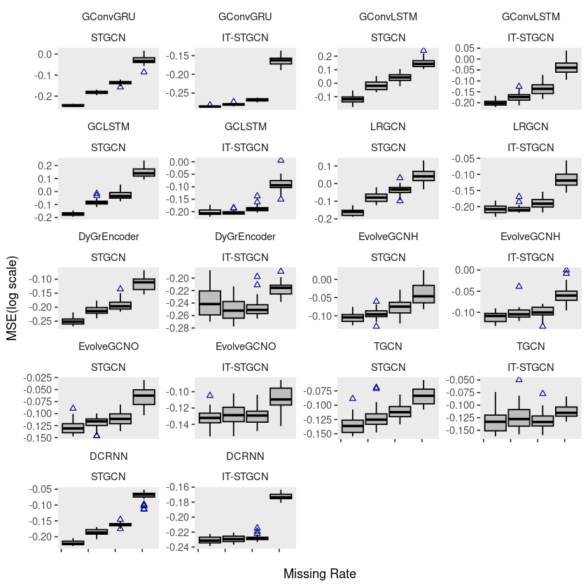
p4 = ggplot(wikimath, aes(x = mrate, y = log10(mse), group = interaction(mrate, method))) +
geom_boxplot(aes(fill = method), color = 'black', width = 0.7, outlier.color = 'black', outlier.shape = 2) +
scale_fill_manual(values = c("steelblue", "pink"), labels=c('Classic', 'Proposed')) +
theme(strip.background = element_blank(), strip.placement = "outside", panel.grid = element_blank(),
legend.position = '') +
labs(x = "", y = "", fill = "") +
scale_x_continuous(labels = c('', '', '', '', '')) +
facet_wrap(~model, ncol = 3, scales = "free_y")
# ggsave("random_list_wikimath.pdf")ggplot(wikimath, aes(x = mrate, y = log10(mse), group = interaction(mrate, method))) +
geom_boxplot(aes(fill = method), color = 'black', width = 0.7, outlier.color = 'black', outlier.shape = 2) +
scale_fill_manual(values = c("steelblue", "pink"), labels=c('Classic', 'Proposed')) +
theme(strip.background = element_blank(), strip.placement = "outside", panel.grid = element_blank(),
legend.position = 'bottom') +
labs(x = "Missing Rate", y = "MSE(log scale)", fill = "") +
scale_x_continuous(labels = c('', '', '', '', '')) +
facet_wrap(~model, ncol = 3, scales = "free_y")
# ggsave("random_list_wikimath.pdf")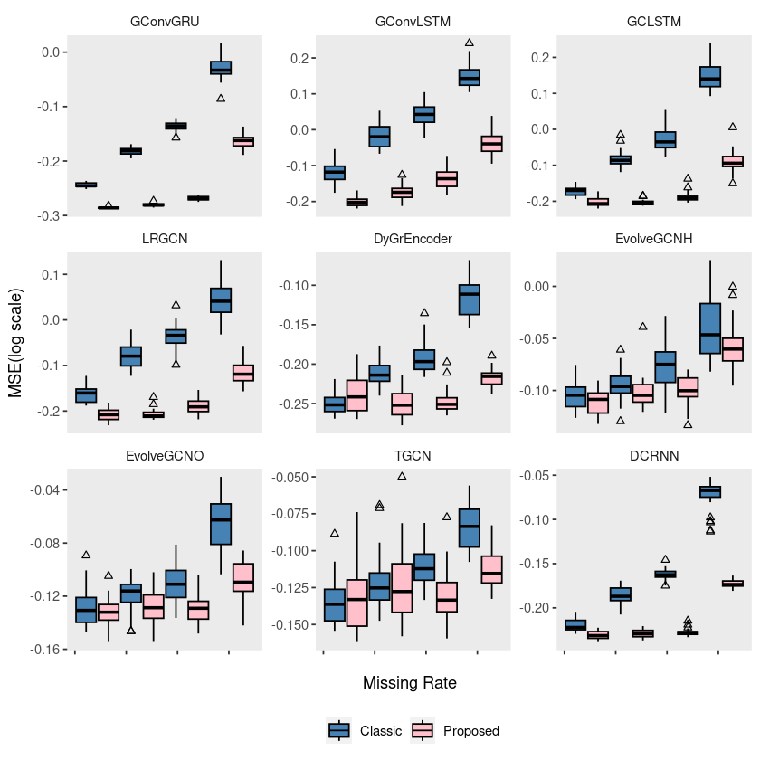
Windmillsmall(lags=8)
windmillsmall <- rbind(
df %>% filter(dataset=='windmillsmall' & mtype=='rand' & inter_method == 'linear' & nof_filters==12 & lags==8 & epoch==50 & model=='GConvGRU' &
( mrate == 0.3 | mrate == 0.5 |mrate == 0.6 | mrate == 0.7)),
df %>% filter(dataset=='windmillsmall' & mtype=='rand' & inter_method == 'linear' & nof_filters==16 & lags==8 & epoch==50 & model=='GConvLSTM' &
( mrate == 0.3 | mrate == 0.5 |mrate == 0.6 | mrate == 0.7)),
df %>% filter(dataset=='windmillsmall' & mtype=='rand' & inter_method == 'linear' & nof_filters==16 & lags==8 & epoch==50 & model=='GCLSTM' &
( mrate == 0.3 | mrate == 0.5 |mrate == 0.6 | mrate == 0.7)),
df %>% filter(dataset=='windmillsmall' & mtype=='rand' & inter_method == 'linear' & nof_filters==12 & lags==8 & epoch==50 & model=='LRGCN' &
( mrate == 0.3 | mrate == 0.5 |mrate == 0.6 | mrate == 0.7)),
df %>% filter(dataset=='windmillsmall' & mtype=='rand' & inter_method == 'linear' & nof_filters==12 & lags==8 & epoch==50 & model=='DyGrEncoder' &
( mrate == 0.3 | mrate == 0.5 |mrate == 0.6 | mrate == 0.7)),
df %>% filter(dataset=='windmillsmall' & mtype=='rand' & inter_method == 'linear' & lags==8 & epoch==50 & model=='EvolveGCNH' &
( mrate == 0.3 | mrate == 0.5 |mrate == 0.6 | mrate == 0.7)),
df %>% filter(dataset=='windmillsmall' & mtype=='rand' & inter_method == 'linear' & lags==8 & epoch==50 & model=='EvolveGCNO' &
( mrate == 0.3 | mrate == 0.5 |mrate == 0.6 | mrate == 0.7)),
df %>% filter(dataset=='windmillsmall' & mtype=='rand' & inter_method == 'linear' & nof_filters==12 & lags==8 & epoch==50 & model=='TGCN' &
( mrate == 0.3 | mrate == 0.5 |mrate == 0.6 | mrate == 0.7)),
df %>% filter(dataset=='windmillsmall' & mtype=='rand' & inter_method == 'linear' & nof_filters==4 & lags==8 & epoch==50 & model=='DCRNN' &
( mrate == 0.3 | mrate == 0.5 |mrate == 0.6 | mrate == 0.7)))
windmillsmall$model <- factor(windmillsmall$model, levels = c("GConvGRU","GConvLSTM","GCLSTM","LRGCN","DyGrEncoder","EvolveGCNH","EvolveGCNO","TGCN","DCRNN"))
windmillsmall$method <- factor(windmillsmall$method, levels = c('STGCN','IT-STGCN'))ggplot(windmillsmall, aes(x=mrate,y= log10(mse),group=mrate)) +
geom_boxplot(fill='grey',color='black',width=0.7,outlier.color = 'darkblue',outlier.shape = 2) +
theme(strip.background = element_blank(), strip.placement = "outside", panel.grid = element_blank()) +
facet_wrap(model ~ method, ncol = 2, scales = "free_y") +
xlab("Missing Rate") +
ylab("MSE(log scale)") +
scale_x_continuous(labels=c('','','','',''))
# ggsave("random_list_windmill.pdf")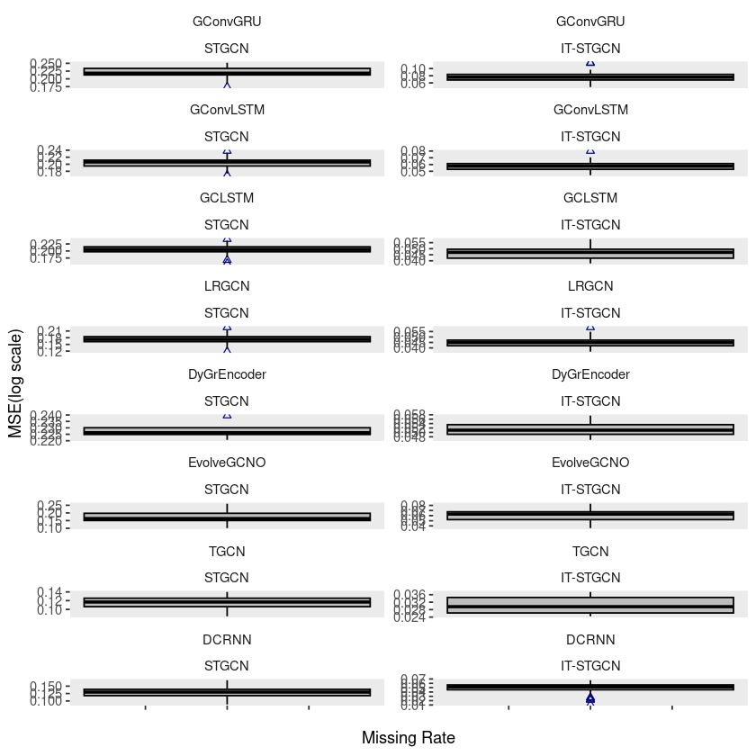
p5 = ggplot(windmillsmall, aes(x = mrate, y = log10(mse), group = interaction(mrate, method))) +
geom_boxplot(aes(fill = method), color = 'black', width = 0.7, outlier.color = 'black', outlier.shape = 2) +
scale_fill_manual(values = c("steelblue", "pink"), labels=c('Classic', 'Proposed')) +
theme(strip.background = element_blank(), strip.placement = "outside", panel.grid = element_blank(),
legend.position = '') +
labs(x = "", y = "", fill = "") +
scale_x_continuous(labels = c('', '', '', '', '')) +
facet_wrap(~model, ncol = 3, scales = "free_y")
# ggsave("random_list_windmill.pdf")ggplot(windmillsmall, aes(x = mrate, y = log10(mse), group = interaction(mrate, method))) +
geom_boxplot(aes(fill = method), color = 'black', width = 0.7, outlier.color = 'black', outlier.shape = 2) +
scale_fill_manual(values = c("steelblue", "pink"), labels=c('Classic', 'Proposed')) +
theme(strip.background = element_blank(), strip.placement = "outside", panel.grid = element_blank(),
legend.position = 'bottom') +
labs(x = "Missing Rate", y = "MSE(log scale)", fill = "") +
scale_x_continuous(labels = c('', '', '', '', '')) +
facet_wrap(~model, ncol = 3, scales = "free_y")
# ggsave("random_list_windmill.pdf")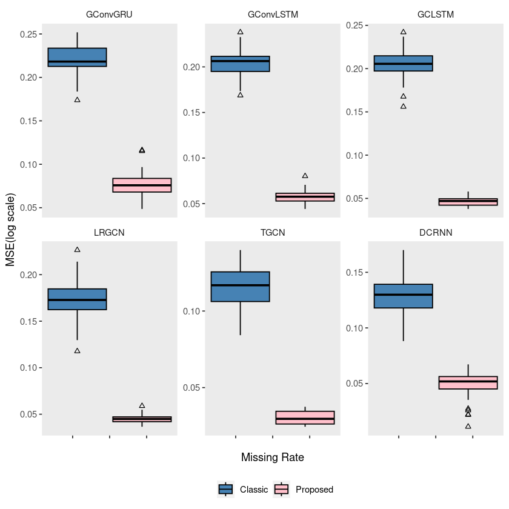
Montevideobus (lags=4)
monte <- rbind(
df %>% filter(dataset=='monte' & mtype=='rand' & inter_method == 'nearest' & nof_filters==12 & lags==4 & epoch==50 & model=='GConvGRU' &
( mrate == 0.3 | mrate == 0.5 |mrate == 0.7 | mrate == 0.8)),
df %>% filter(dataset=='monte' & mtype=='rand' & inter_method == 'nearest' & nof_filters==12 & lags==4 & epoch==50 & model=='GConvLSTM' &
( mrate == 0.3 | mrate == 0.5 |mrate == 0.7 | mrate == 0.8)),
df %>% filter(dataset=='monte' & mtype=='rand' & inter_method == 'nearest' & nof_filters==12 & lags==4 & epoch==50 & model=='GCLSTM' &
( mrate == 0.3 | mrate == 0.5 |mrate == 0.7 | mrate == 0.8)),
df %>% filter(dataset=='monte' & mtype=='rand' & inter_method == 'nearest' & nof_filters==2 & lags==4 & epoch==50 & model=='LRGCN' &
( mrate == 0.3 | mrate == 0.5 |mrate == 0.7 | mrate == 0.8)),
df %>% filter(dataset=='monte' & mtype=='rand' & inter_method == 'nearest' & nof_filters==12 & lags==4 & epoch==50 & model=='DyGrEncoder' &
( mrate == 0.3 | mrate == 0.5 |mrate == 0.7 | mrate == 0.8)),
df %>% filter(dataset=='monte' & mtype=='rand' & inter_method == 'nearest' & lags==4 & epoch==50 & model=='EvolveGCNH' &
( mrate == 0.3 | mrate == 0.5 |mrate == 0.7 | mrate == 0.8)),
df %>% filter(dataset=='monte' & mtype=='rand' & inter_method == 'nearest' & lags==4 & epoch==50 & model=='EvolveGCNO' &
( mrate == 0.3 | mrate == 0.5 |mrate == 0.7 | mrate == 0.8)),
df %>% filter(dataset=='monte' & mtype=='rand' & inter_method == 'nearest' & nof_filters==8 & lags==4 & epoch==50 & model=='TGCN' &
( mrate == 0.3 | mrate == 0.5 |mrate == 0.7 | mrate == 0.8)),
df %>% filter(dataset=='monte' & mtype=='rand' & inter_method == 'nearest' & nof_filters==12 & lags==4 & epoch==50 & model=='DCRNN' &
( mrate == 0.3 | mrate == 0.5 |mrate == 0.7 | mrate == 0.8)))
monte$model <- factor(monte$model, levels = c("GConvGRU","GConvLSTM","GCLSTM","LRGCN","DyGrEncoder","EvolveGCNH","EvolveGCNO","TGCN","DCRNN"))
monte$method <- factor(monte$method, levels = c('STGCN','IT-STGCN'))ggplot(monte, aes(x=mrate,y= log10(mse),group=mrate)) + facet_wrap(model~method,ncol=4) +
geom_boxplot(fill='grey',color='black',width=0.7,outlier.color = 'darkblue',outlier.shape = 2) +
theme(strip.background = element_blank(), strip.placement = "outside", panel.grid = element_blank()) +
facet_wrap(model ~ method, ncol = 4, scales = "free_y") +
xlab("Missing Rate") +
ylab("MSE(log scale)")+
scale_x_continuous(labels=c('','','','',''))
# ggsave("random_list_monte.pdf")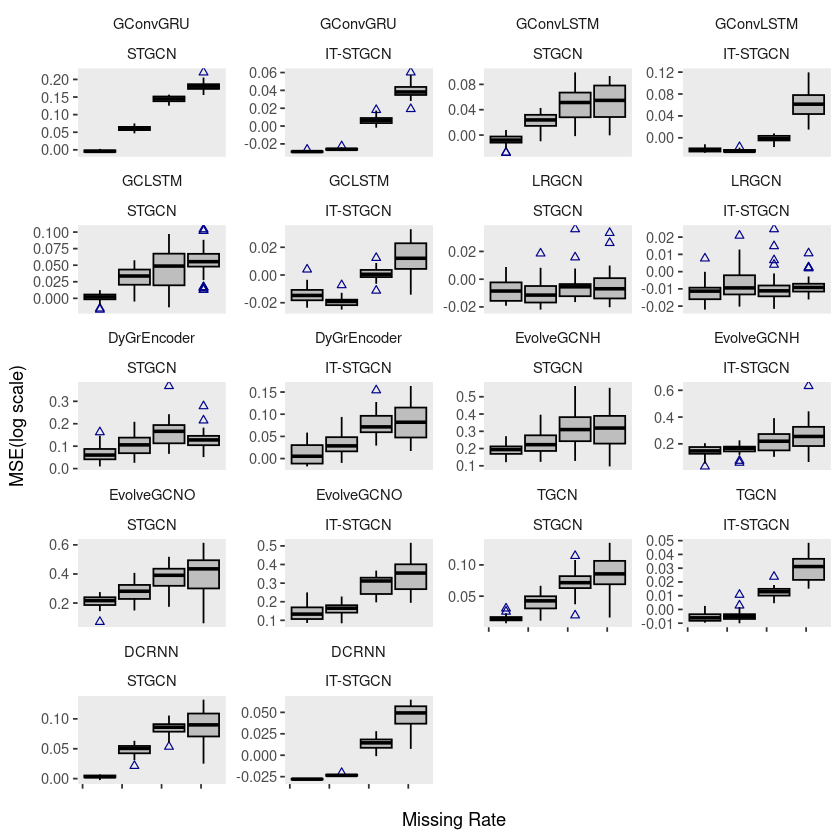
p6 = ggplot(monte, aes(x = mrate, y = log10(mse), group = interaction(mrate, method))) +
geom_boxplot(aes(fill = method), color = 'black', width = 0.7, outlier.color = 'black', outlier.shape = 2) +
scale_fill_manual(values = c("steelblue", "pink"), labels=c('Classic', 'Proposed')) +
theme(strip.background = element_blank(), strip.placement = "outside", panel.grid = element_blank(),
legend.position = 'bottom') +
labs(x = "", y = "", fill = "") +
scale_x_continuous(labels = c('', '', '', '', '')) +
facet_wrap(~model, ncol = 3, scales = "free_y")
# ggsave("random_list_monte.pdf")ggplot(monte, aes(x = mrate, y = log10(mse), group = interaction(mrate, method))) +
geom_boxplot(aes(fill = method), color = 'black', width = 0.7, outlier.color = 'black', outlier.shape = 2) +
scale_fill_manual(values = c("steelblue", "pink"), labels=c('Classic', 'Proposed')) +
theme(strip.background = element_blank(), strip.placement = "outside", panel.grid = element_blank(),
legend.position = '') +
labs(x = "Missing Rate", y = "MSE(log scale)", fill = "") +
scale_x_continuous(labels = c('', '', '', '', '')) +
facet_wrap(~model, ncol = 3, scales = "free_y")
# ggsave("random_list_monte.pdf")
ggplot3
source('ggplot3.R')figsize(20,20)
(p1|p2)/(p3|p4)/(p5|p6)
# ggsave("random_mrate.pdf",width = 20,height = 20)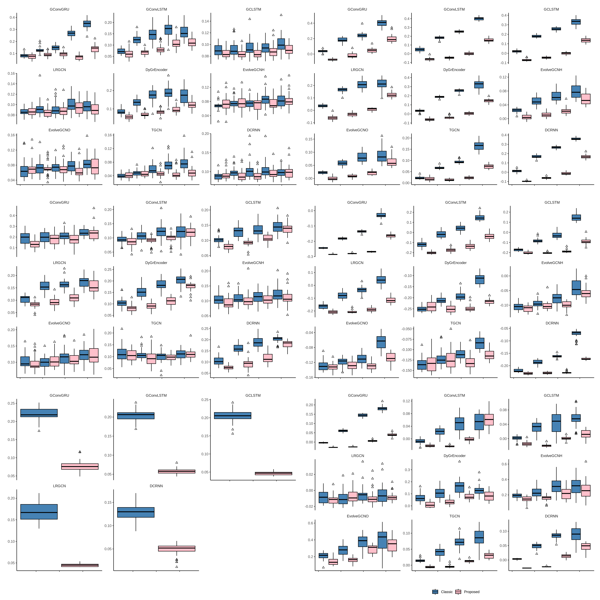
fivenodes| X | dataset | method | mrate | mtype | lags | nof_filters | inter_method | epoch | mse | calculation_time | model |
|---|---|---|---|---|---|---|---|---|---|---|---|
| <int> | <chr> | <fct> | <dbl> | <chr> | <int> | <dbl> | <chr> | <dbl> | <dbl> | <dbl> | <fct> |
| 2 | fivenodes | STGCN | 0.7 | rand | 2 | 12 | linear | 50 | 1.892262 | 81.97655 | GConvGRU |
| 4 | fivenodes | STGCN | 0.8 | rand | 2 | 12 | linear | 50 | 2.072818 | 103.64874 | GConvGRU |
| 8 | fivenodes | IT-STGCN | 0.7 | rand | 2 | 12 | linear | 50 | 1.244197 | 123.85583 | GConvGRU |
| 10 | fivenodes | IT-STGCN | 0.8 | rand | 2 | 12 | linear | 50 | 1.428064 | 116.14180 | GConvGRU |
| 14 | fivenodes | STGCN | 0.7 | rand | 2 | 12 | linear | 50 | 1.699677 | 99.00136 | GConvGRU |
| 16 | fivenodes | STGCN | 0.8 | rand | 2 | 12 | linear | 50 | 2.333100 | 98.85933 | GConvGRU |
| 20 | fivenodes | IT-STGCN | 0.7 | rand | 2 | 12 | linear | 50 | 1.267609 | 114.73862 | GConvGRU |
| 22 | fivenodes | IT-STGCN | 0.8 | rand | 2 | 12 | linear | 50 | 1.424445 | 113.63355 | GConvGRU |
| 26 | fivenodes | STGCN | 0.7 | rand | 2 | 12 | linear | 50 | 1.868236 | 114.07605 | GConvGRU |
| 28 | fivenodes | STGCN | 0.8 | rand | 2 | 12 | linear | 50 | 2.389049 | 99.55423 | GConvGRU |
| 32 | fivenodes | IT-STGCN | 0.7 | rand | 2 | 12 | linear | 50 | 1.103083 | 122.35968 | GConvGRU |
| 34 | fivenodes | IT-STGCN | 0.8 | rand | 2 | 12 | linear | 50 | 1.337490 | 140.39959 | GConvGRU |
| 38 | fivenodes | STGCN | 0.7 | rand | 2 | 12 | linear | 50 | 1.816421 | 115.28978 | GConvGRU |
| 40 | fivenodes | STGCN | 0.8 | rand | 2 | 12 | linear | 50 | 2.235262 | 122.47946 | GConvGRU |
| 44 | fivenodes | IT-STGCN | 0.7 | rand | 2 | 12 | linear | 50 | 1.159646 | 141.34393 | GConvGRU |
| 46 | fivenodes | IT-STGCN | 0.8 | rand | 2 | 12 | linear | 50 | 1.301588 | 147.76632 | GConvGRU |
| 50 | fivenodes | STGCN | 0.7 | rand | 2 | 12 | linear | 50 | 1.931288 | 119.68102 | GConvGRU |
| 52 | fivenodes | STGCN | 0.8 | rand | 2 | 12 | linear | 50 | 2.349104 | 119.17171 | GConvGRU |
| 56 | fivenodes | IT-STGCN | 0.7 | rand | 2 | 12 | linear | 50 | 1.195797 | 135.26314 | GConvGRU |
| 58 | fivenodes | IT-STGCN | 0.8 | rand | 2 | 12 | linear | 50 | 1.403969 | 137.56146 | GConvGRU |
| 62 | fivenodes | STGCN | 0.7 | rand | 2 | 12 | linear | 50 | 1.877509 | 114.22763 | GConvGRU |
| 64 | fivenodes | STGCN | 0.8 | rand | 2 | 12 | linear | 50 | 2.517601 | 116.79539 | GConvGRU |
| 68 | fivenodes | IT-STGCN | 0.7 | rand | 2 | 12 | linear | 50 | 1.196040 | 137.43869 | GConvGRU |
| 70 | fivenodes | IT-STGCN | 0.8 | rand | 2 | 12 | linear | 50 | 1.285712 | 139.89288 | GConvGRU |
| 74 | fivenodes | STGCN | 0.7 | rand | 2 | 12 | linear | 50 | 1.614468 | 120.67241 | GConvGRU |
| 76 | fivenodes | STGCN | 0.8 | rand | 2 | 12 | linear | 50 | 2.149269 | 119.84526 | GConvGRU |
| 80 | fivenodes | IT-STGCN | 0.7 | rand | 2 | 12 | linear | 50 | 1.147181 | 136.44781 | GConvGRU |
| 82 | fivenodes | IT-STGCN | 0.8 | rand | 2 | 12 | linear | 50 | 1.276231 | 135.66005 | GConvGRU |
| 86 | fivenodes | STGCN | 0.7 | rand | 2 | 12 | linear | 50 | 1.765978 | 115.49126 | GConvGRU |
| 88 | fivenodes | STGCN | 0.8 | rand | 2 | 12 | linear | 50 | 2.442478 | 116.26185 | GConvGRU |
| ⋮ | ⋮ | ⋮ | ⋮ | ⋮ | ⋮ | ⋮ | ⋮ | ⋮ | ⋮ | ⋮ | ⋮ |
| 9760 | fivenodes | STGCN | 0.6 | rand | 2 | 2 | linear | 50 | 1.215530 | 21.37621 | DCRNN |
| 9762 | fivenodes | IT-STGCN | 0.6 | rand | 2 | 2 | linear | 50 | 1.206242 | 35.11960 | DCRNN |
| 9764 | fivenodes | STGCN | 0.6 | rand | 2 | 2 | linear | 50 | 1.234817 | 21.35544 | DCRNN |
| 9766 | fivenodes | IT-STGCN | 0.6 | rand | 2 | 2 | linear | 50 | 1.199285 | 19.50826 | DCRNN |
| 9768 | fivenodes | STGCN | 0.6 | rand | 2 | 2 | linear | 50 | 1.268049 | 16.97555 | DCRNN |
| 9770 | fivenodes | IT-STGCN | 0.6 | rand | 2 | 2 | linear | 50 | 1.199859 | 18.76043 | DCRNN |
| 9772 | fivenodes | STGCN | 0.6 | rand | 2 | 2 | linear | 50 | 1.276552 | 15.83787 | DCRNN |
| 9774 | fivenodes | IT-STGCN | 0.6 | rand | 2 | 2 | linear | 50 | 1.208091 | 17.71081 | DCRNN |
| 9776 | fivenodes | STGCN | 0.6 | rand | 2 | 2 | linear | 50 | 1.273245 | 19.52254 | DCRNN |
| 9778 | fivenodes | IT-STGCN | 0.6 | rand | 2 | 2 | linear | 50 | 1.246838 | 38.88582 | DCRNN |
| 9780 | fivenodes | STGCN | 0.6 | rand | 2 | 2 | linear | 50 | 1.280940 | 21.22349 | DCRNN |
| 9782 | fivenodes | IT-STGCN | 0.6 | rand | 2 | 2 | linear | 50 | 1.223870 | 31.15116 | DCRNN |
| 9784 | fivenodes | STGCN | 0.6 | rand | 2 | 2 | linear | 50 | 1.320345 | 21.75368 | DCRNN |
| 9786 | fivenodes | IT-STGCN | 0.6 | rand | 2 | 2 | linear | 50 | 1.211209 | 25.25301 | DCRNN |
| 9788 | fivenodes | STGCN | 0.6 | rand | 2 | 2 | linear | 50 | 1.315305 | 21.44829 | DCRNN |
| 9790 | fivenodes | IT-STGCN | 0.6 | rand | 2 | 2 | linear | 50 | 1.197776 | 27.25900 | DCRNN |
| 9792 | fivenodes | STGCN | 0.6 | rand | 2 | 2 | linear | 50 | 1.267516 | 20.36553 | DCRNN |
| 9794 | fivenodes | IT-STGCN | 0.6 | rand | 2 | 2 | linear | 50 | 1.204517 | 35.18677 | DCRNN |
| 9796 | fivenodes | STGCN | 0.6 | rand | 2 | 2 | linear | 50 | 1.239286 | 21.63872 | DCRNN |
| 9798 | fivenodes | IT-STGCN | 0.6 | rand | 2 | 2 | linear | 50 | 1.197067 | 26.69481 | DCRNN |
| 9800 | fivenodes | STGCN | 0.6 | rand | 2 | 2 | linear | 50 | 1.201229 | 14.04772 | DCRNN |
| 9802 | fivenodes | IT-STGCN | 0.6 | rand | 2 | 2 | linear | 50 | 1.199647 | 18.36858 | DCRNN |
| 9804 | fivenodes | STGCN | 0.6 | rand | 2 | 2 | linear | 50 | 1.201632 | 14.90250 | DCRNN |
| 9806 | fivenodes | IT-STGCN | 0.6 | rand | 2 | 2 | linear | 50 | 1.203077 | 18.51829 | DCRNN |
| 9808 | fivenodes | STGCN | 0.6 | rand | 2 | 2 | linear | 50 | 1.338037 | 20.13046 | DCRNN |
| 9810 | fivenodes | IT-STGCN | 0.6 | rand | 2 | 2 | linear | 50 | 1.318265 | 25.98562 | DCRNN |
| 9812 | fivenodes | STGCN | 0.6 | rand | 2 | 2 | linear | 50 | 1.247469 | 22.01481 | DCRNN |
| 9814 | fivenodes | IT-STGCN | 0.6 | rand | 2 | 2 | linear | 50 | 1.251032 | 33.56302 | DCRNN |
| 9816 | fivenodes | STGCN | 0.6 | rand | 2 | 2 | linear | 50 | 1.285776 | 21.56314 | DCRNN |
| 9818 | fivenodes | IT-STGCN | 0.6 | rand | 2 | 2 | linear | 50 | 1.196750 | 29.83325 | DCRNN |
A data.frame: 2700 × 12